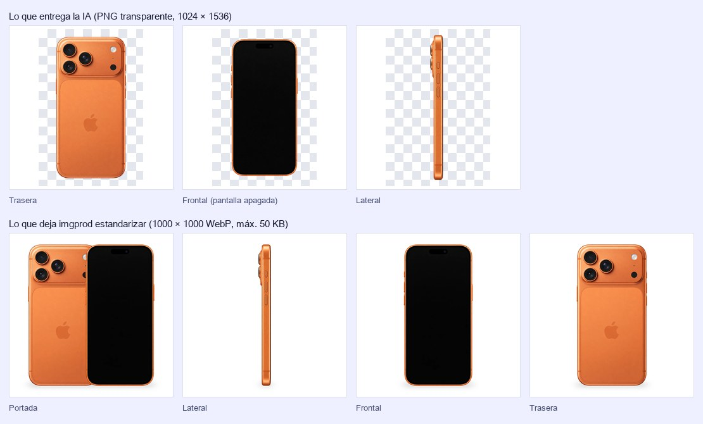
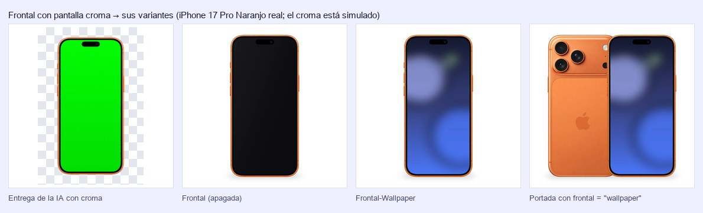
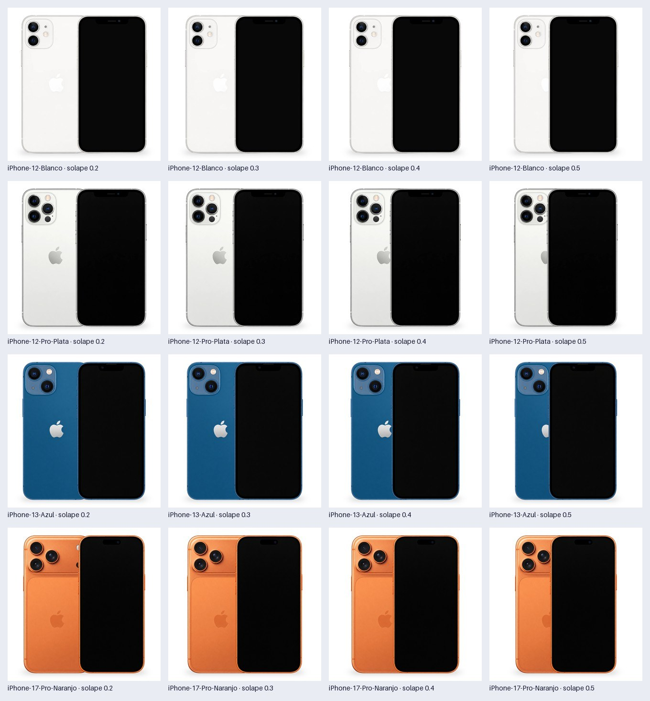

Por qué
Antes, cada set de fotos se hacía a mano en ChatGPT. Se enviaban los originales, referencias y un prompt; se generaban 4 vistas; se pedía estandarizar centrado y tamaño; y se subía a Shopify ficha por ficha. La revisión de las fichas de iPhone activas muestra el resultado:
- fichas de iPhone activas
- 673
- combinaciones modelo + color: el trabajo real
- 183
- tamaños de imagen distintos
- 25
- fichas que mezclan tamaños en su galería
- 36 %
- veces que se subió el mismo QR de Subtel
- 401
Cada combinación comparte sus fotos con 3,7 fichas en promedio (capacidad × condición), así que el trabajo real se hace por combinación. El catálogo completo son 549 imágenes de IA (3 por combinación), que se convierten en 915 finales (5 por combinación). El 64 % de las fichas ya usa el set FichaFinalReuse en 1000×1000 WebP, pero el proceso no lo imponía, y las fichas más nuevas (17 Pro, 17 Pro Max, 17e) entraron con exportes "Diseño sin título", PNG de 1200 px y hasta una imagen de 642×1223.
El chat mezclaba tres trabajos que necesitan herramientas distintas.
| Trabajo | Ejemplo | Herramienta |
|---|---|---|
| Creativo | Generar la vista lateral a partir de una foto de frente | IA generativa por API, con prompt y referencia fijos por vista (etapa 1) |
| Mecánico | Centrar, escalar, poner fondo y formato; poner un wallpaper; armar la Portada | Script determinista (etapa 2). Si lo hace la IA, redibuja la imagen y puede alterar el teléfono |
| De criterio | ¿Es el modelo correcto? ¿Están bien las cámaras y el color? | Una persona, con alertas automáticas (etapa 3) |
Vista general
imgprod generar corre la etapa 1 y a continuación la 2.| Etapa | Qué hace | Entra | Sale | Estado |
|---|---|---|---|---|
1 · Generarimgprod generar | Pide a la API 3 vistas por equipo: Lateral, Frontal (con pantalla croma) y Trasera | Originales <Modelo> <Color>.<ext>, estilo/ | generadas/<producto>/<Vista>.png y .json | Implementada |
2 · Estandarizarimgprod estandarizarimgprod portada | Quita el fondo, recorta, escala y centra; arma la Frontal con y sin wallpaper; compone la Portada | generadas/ o imágenes con el nombre del catálogo | salida/<producto>/: 5 WebP, maestros/, reporte.json | Implementada |
| 3 · Revisar | Una persona aprueba o rechaza cada vista | salida/, alertas, originales | revision.json (propuesto) | Por definir |
| 4 · Publicar | Sube cada imagen una vez por tienda y la asocia a las N fichas de su combinación | Vistas aprobadas, token de cada tienda | Fichas actualizadas | Por definir |
Qué pasa por defecto
Con el config.toml del repo, sin cambiar nada:
- Generar pide la Frontal con la pantalla en verde croma
#00FF00, porquepantalla.variantesincluye"wallpaper". La Lateral y la Trasera se piden igual que antes. - Estandarizar deja 5 imágenes por producto, en este orden de galería:
- Portada
- Lateral
- Frontal (apagada)
- Frontal-Wallpaper
- Trasera
- La Portada usa la Frontal apagada, con la trasera a la izquierda y detrás. El solape es 0,1667: la frontal tapa 1/6 de su propio ancho, así que de la trasera se ve 5/6, como en la referencia de estilo. No hay desfase vertical.
- El wallpaper se busca en
estilo/wallpapers/, que hoy no tiene imágenes. Sin wallpaper, la Frontal-Wallpaper sale con ✗ y el comando termina con código 1. Las otras 4 imágenes se guardan igual. - Las Frontales generadas antes del cambio tienen la pantalla negra, sin croma. Salen como Frontal, con la alerta
SIN_PANTALLA_CROMA, y sin Frontal-Wallpaper hasta que se regeneren (~US$0,06 por producto).
Consola real · iPhone 17 Pro Naranjo, con su Frontal generada antes del cambio
$ imgprod estandarizar generadas/iPhone-17-Pro-Naranjo Estandarizando 3 imágenes → salida/ ⚠ iPhone-17-Pro-Naranjo · Frontal ×0.67 · 11.3 KB SIN_PANTALLA_CROMA: la frontal no trae la pantalla en color croma (#00FF00): se usa tal cual como Frontal (revisar que esté apagada) y no se puede armar la Frontal-Wallpaper ✗ iPhone-17-Pro-Naranjo · Frontal-Wallpaper: la frontal no trae la pantalla en color croma (#00FF00): regenerarla; el prompt la pide así cuando pantalla.variantes incluye "wallpaper" ✓ iPhone-17-Pro-Naranjo · Lateral ×0.64 · 9.2 KB ✓ iPhone-17-Pro-Naranjo · Trasera ×0.65 · 26.4 KB ✓ iPhone-17-Pro-Naranjo · Portada (compuesta) ×0.67 · 30.8 KB 5 imágenes de salida: 3 sin alertas, 1 con alertas, 1 con error. Detalle en salida/<producto>/reporte.json

imgprod estandarizar: 1000 × 1000 WebP de máx. 50 KB, con el teléfono a 900 px de alto. Esta Frontal se generó antes del cambio, sin croma, así que no tiene Frontal-Wallpaper.Cómo se usa
imgprod generar "muestras/originales/iPhone 12 Azul.webp" # genera las 3 vistas (pide confirmación antes de gastar) y las estandariza imgprod estandarizar generadas/ # solo estandariza: no llama a la API imgprod portada --solape 0.2,0.3,0.4 # hoja para comparar solapes: no cambia ninguna imagen imgprod portada # vuelve a componer la Portada con [portada] de config.toml
Los comandos se corren desde la carpeta del proyecto, con el entorno activo. Los parámetros están en config.toml, y cada comando acepta -c para usar otro archivo. Todos terminan con código 0 si todo salió bien, 1 si alguna imagen tuvo error (o si se canceló la generación) y 2 si la configuración es inválida o faltan archivos. Las alertas no cambian el código.
Tener la Frontal con wallpaper
- Deja el wallpaper en
estilo/wallpapers/Con_default.jpgalcanza para todos los productos. Para uno por modelo o por color, ver dónde se busca. Conviene vertical, de al menos 1290 × 2796 px, y con derechos de uso comercial. - Genera la Frontal con croma
imgprod generarya la pide así. Para regenerar solo la Frontal de productos ya generados, ponvistas = ["Frontal"]en[generar]: es una llamada por producto, ~US$0,06. Antes de gastar muestra el costo y pide confirmación. - Estandariza
imgprod estandarizar generadas/deja…-Frontal.webp(apagada) y…-Frontal-Wallpaper.webp.imgprod generarlo hace solo al terminar. - Opcional: la Portada con wallpaperPon
frontal = "wallpaper"en[portada]y correimgprod portada. Toma segundos: no vuelve a generar ni a quitar el fondo.
Consola real · la misma Frontal con croma simulado, con pantalla.wallpapers apuntando a un wallpaper de ejemplo
$ imgprod estandarizar generadas/iPhone-17-Pro-Naranjo Estandarizando 3 imágenes → salida/ ✓ iPhone-17-Pro-Naranjo · Frontal ×0.67 · 12 KB ✓ iPhone-17-Pro-Naranjo · Frontal-Wallpaper (wallpaper ejemplo-reuse.jpg) ×0.67 · 17.4 KB ✓ iPhone-17-Pro-Naranjo · Lateral ×0.64 · 9.2 KB ✓ iPhone-17-Pro-Naranjo · Trasera ×0.65 · 26.4 KB ✓ iPhone-17-Pro-Naranjo · Portada (compuesta) ×0.67 · 31.2 KB 5 imágenes de salida: 5 sin alertas, 0 con alertas, 0 con error. Detalle en salida/<producto>/reporte.json # con frontal = "wallpaper" en [portada]: $ imgprod portada Componiendo la Portada de 1 producto (solape 0.1667, desfase 0, frontal wallpaper) ✓ iPhone-17-Pro-Naranjo · Portada (compuesta) ×0.67 · 36.4 KB 1 imagen: 1 ok, 0 con error.
Ajustar el solape de la Portada
- Compara valores
imgprod portada --solape 0.2,0.3,0.4armasalida/muestras-portada.jpg, con una fila por producto y una columna por valor. No cambia ninguna imagen. - Elige unoPonlo como
solapeen[portada]deconfig.toml. - Aplícalo
imgprod portadarecompone la Portada de todos los productos desalida/en segundos, con los recortes demaestros/. Las próximas corridas deestandarizarygenerarusan el mismo valor.
Consola real
$ imgprod portada --solape 0.2,0.3
Hoja con 1 producto × 2 solapes → salida/muestras-portada.jpg
Elige un valor, ponlo en [portada] solape de config.toml y corre imgprod portada para aplicarlo.
Elegir qué Frontales salen
pantalla.variantes | Qué sale | Qué se le pide a la IA |
|---|---|---|
["apagada", "wallpaper"] (default) | Frontal y Frontal-Wallpaper | Pantalla croma |
["apagada"] | Solo la Frontal, como antes del cambio. No hace falta wallpaper | Pantalla apagada |
["wallpaper"] | Solo la Frontal-Wallpaper. Pide también portada.frontal = "wallpaper": la configuración valida que la Frontal de la Portada esté entre las variantes | Pantalla croma |
Convenciones
Son el contrato entre etapas: si se respetan, cada módulo puede cambiar por dentro sin romper a los demás.
imagenes-producto/ ├── config.toml # parámetros; los defaults están en src/imagenes_producto/config.py ├── estilo/ # receta fija de generación; se versiona │ ├── prompts/ # comun.md + lateral.md · frontal.md · trasera.md + pantalla-croma.md · pantalla-apagada.md │ ├── referencias/ # una imagen de estilo por vista: *-Lateral, *-Frontal, *-Trasera │ ├── rasgos.toml # rasgos clave por modelo que se agregan al prompt (vacío por ahora) │ └── wallpapers/ # <producto>.jpg · <modelo>.jpg · _default.jpg (vacía por ahora) ├── generadas/<producto>/ # etapa 1: <Vista>.png + <Vista>.json (no se versiona) ├── salida/<producto>/ # etapa 2: 5 WebP + maestros/ + reporte.json (no se versiona) ├── docs/ # pipeline.html (esta página) y referencia.md (brief para otra IA) ├── src/imagenes_producto/ # cli · config · generar · estandarizar · pantalla · fondo · imagen └── tests/ # test_generar · test_estandarizar · test_pantalla
| Elemento | Regla | Ejemplo |
|---|---|---|
| Original | <Modelo> <Color>.<ext>; el color es la última palabra | iPhone 12 Pro Plata.webp |
| Producto | Modelo y color, con guiones | iPhone-12-Pro-Plata |
| Modelo | El producto sin la última palabra. Sirve para buscar el wallpaper | iPhone-12-Pro |
| Vistas de la IA | Lateral, Frontal y Trasera (config.VISTAS_GENERADAS) | generadas/iPhone-12-Pro-Plata/Frontal.png |
| Vistas finales | En orden de galería: Portada, Lateral, Frontal, Frontal-Wallpaper, Trasera (config.VISTAS) | — |
| Variantes de pantalla | apagada da la vista Frontal; wallpaper, la Frontal-Wallpaper | — |
| Nombre final | salida.nombre = "{producto}-Version-Final-{vista}" | iPhone-12-Pro-Plata-Version-Final-Frontal-Wallpaper.webp |
| Entrada de estandarizar | El nombre final o la estructura <producto>/<vista>.<ext> | iPhone-12-Azul/frontal.png |
| Recortes maestros | Transparentes y sin escalar. La Portada se compone desde aquí | salida/iPhone-12-Azul/maestros/Trasera.png |
| Reporte | Una entrada por vista: entrada, final, maestro, medidas, caja, escala, método de fondo, wallpaper, calidad, peso, alertas y error | salida/iPhone-12-Azul/reporte.json |
| Imágenes fijas | QR de Subtel y sellos. No son parte del pipeline: van al final de la galería (etapa 4) | Subtel-QR* |
Generar
Implementada · generar.pyPor cada original y cada vista (Lateral, Frontal, Trasera), hace una llamada a la API de OpenAI y guarda lo que devuelve sin tocarlo. La Portada y las variantes de la Frontal no se le piden a la IA: las arma la etapa 2. Al terminar, estandariza lo generado, salvo con --solo-generar.
Entra
- <Modelo> <Color>.<ext>archivos o carpetas de originales; png, jpg o webp
- estilo/prompts/ · estilo/referencias/ · estilo/rasgos.tomlla receta fija de generación
- OPENAI_API_KEYen
.env, nunca en el código
Sale
- generadas/<producto>/<Vista>.pngsolo el teléfono, con fondo transparente y sin sombra; la Frontal, con la pantalla en croma. Las candidatas extra van como
<Vista>-2.png - generadas/<producto>/<Vista>.jsonmodelo de IA, calidad, medidas, tokens, costo real, segundos, fecha y el prompt completo
Qué se envía en cada llamada
- El original, recortado a su contenido con 3 % de margen, en sRGB y PNG, con un lado mayor de máx. 2048 px. Si el equipo ocupa menos de 800 px, alerta
ORIGINAL_CHICO. - La referencia de estilo de esa vista: exactamente una imagen
*-<Vista>enestilo/referencias/. - El prompt:
comun.mdmás el archivo de la vista, con las variables reemplazadas.
Llamada de ClienteOpenAI
client.images.edit(
model="gpt-image-2.5-sunburst", # generar.modelo
image=[original, referencia], # PNG en sRGB
prompt=prompt, # comun.md + <vista>.md
size="1024x1536", # generar.medidas
quality="high", # generar.calidad
background="transparent", # generar.fondo = "transparente"
output_format="png",
n=1, # generar.candidatos
)
Variables del prompt
| Variable | Se reemplaza por |
|---|---|
{modelo}, {color} | Lo que dice el nombre del original |
{vista} | lateral, frontal o trasera |
{fondo} | "transparente" o "blanco liso (#FFFFFF), sin degradados", según generar.fondo |
{rasgos} | Los rasgos del modelo en rasgos.toml, si hay |
{pantalla} | Solo en frontal.md: el texto de pantalla-croma.md si pantalla.variantes incluye "wallpaper"; si no, el de pantalla-apagada.md. Si falta y se pide wallpaper, generar se detiene antes de gastar |
{color_croma} | Solo en pantalla-croma.md: pantalla.color_croma |
estilo/prompts/pantalla-croma.md, con {color_croma} = #00FF00
Pantalla encendida y llena de un solo color plano, exactamente #00FF00, de borde a borde de la pantalla: sin wallpaper, hora, barra de estado, íconos, texto, reflejos ni degradados. El notch, la perforación o la Dynamic Island quedan negros, como en el equipo real. Ese color se reemplaza después por el wallpaper o por la pantalla apagada.
estilo/prompts/pantalla-apagada.md
Pantalla apagada: negra y uniforme, sin wallpaper, sin interfaz y sin reflejos fuertes.
Costo
| Alcance | Estimado antes de gastar | Real medido |
|---|---|---|
| Una vista | ~US$0,071 | US$0,061–0,062 |
| Un producto (3 vistas) | ~US$0,21 | ~US$0,19 |
| Solo la Frontal de un producto | ~US$0,07 | ~US$0,06 |
| Catálogo completo (183 × 3 = 549 vistas) | ~US$39 | ~US$34 |
Con gpt-image-2.5-sunburst, calidad high y 1024 × 1536; cada llamada tarda 24–35 s. El estimado suma US$0,041 de salida y US$0,03 de entrada por llamada. El costo real sale de los tokens que informa la API y queda en el .json de cada vista.
Errores y confirmación
- Antes de gastar muestra cuántas imágenes va a generar y el costo estimado, y pide confirmación. Sin terminal interactiva no gasta: hay que pasar
--si. - Un error de una vista (pedido rechazado, respuesta sin imagen) queda registrado y el lote sigue. El cliente reintenta solo los límites de uso y los errores temporales, hasta 5 veces.
- Un error fatal detiene el lote: API key inválida, acceso denegado, falta una referencia o falta
{pantalla}enfrontal.md. Las referencias y{pantalla}se revisan antes de la primera llamada, así que esos dos errores no gastan.
Estandarizar
Implementada · estandarizar.py · pantalla.pyDeja cada vista en el lienzo estándar, con el teléfono del mismo alto y centrado. No redibuja el producto: solo recorta, escala y compone, así que la misma entrada da los mismos bytes de salida. De la Frontal saca sus variantes de pantalla y, con la Trasera, compone la Portada. Un error en una imagen queda en su resultado y no detiene el lote.
Entra
- generadas/<producto>/<vista>.pngo
<producto>-Version-Final-<Vista>.<ext>; png, jpg o webp; las carpetas se recorren - estilo/wallpapers/para la Frontal-Wallpaper
- config.toml
[lienzo],[producto],[portada],[pantalla],[sombra],[salida]…
Sale
- salida/<producto>/<producto>-Version-Final-<Vista>.webplas 5 vistas, 1000 × 1000, máx. 50 KB
- salida/<producto>/maestros/<Vista>.pngrecortes transparentes sin escalar: permiten recomponer sin volver a generar
- salida/<producto>/reporte.jsonmedidas, escala, calidad, peso, wallpaper y alertas de cada vista
Qué hace con cada imagen
- AbreAplica la rotación EXIF. Si trae un perfil de color que no es sRGB (el Display P3 de las fotos de iPhone), convierte a sRGB con LittleCMS: descartarlo sin convertir cambiaría los colores saturados.
- Quita el fondo
- Si la imagen trae transparencia, como la que entrega OpenAI, usa ese alfa.
- Si no, segmenta con rembg y el modelo BiRefNet (licencia MIT). La primera vez descarga 973 MB, y en CPU tarda ~30–50 s por imagen. El modelo que rembg trae por defecto no admite uso comercial.
- Arma el recorte maestro
- Borra las manchas menores al 0,5 % del objeto principal (
VARIOS_OBJETOSsi queda más de uno). - Deja el interior opaco. Si segmentó, rellena los huecos con el color del original (
HUECOS_RELLENADOSsi superan el 0,1 %). - Mide el contorno con alfa ≥ 128.
TOCA_BORDEsi queda a ≤2 px del borde de la entrada.
- Borra las manchas menores al 0,5 % del objeto principal (
- Lo pone en el lienzo
- Escala para que el contorno mida 0,90 × 1000 = 900 px de alto, o menos si no cabe a lo ancho (
LIMITADO_POR_ANCHO).AMPLIACIONsi hay que ampliar más de 1,10×. - Centra el contorno y agrega la sombra de contacto: la silueta aplastada contra el borde inferior y desenfocada, ajustada a las referencias.
- Escala para que el contorno mida 0,90 × 1000 = 900 px de alto, o menos si no cabe a lo ancho (
- GuardaWebP con la mayor calidad entre 60 y 90 que cumple 50 KB, por búsqueda binaria (
PESO_EXCEDIDOsi ni con 60 alcanza). Guarda también el maestro y actualizareporte.json.
Lo que queda en salida/
salida/iPhone-12-Azul/ ├── iPhone-12-Azul-Version-Final-Portada.webp # compuesta con la Trasera y la Frontal ├── iPhone-12-Azul-Version-Final-Lateral.webp ├── iPhone-12-Azul-Version-Final-Frontal.webp # pantalla apagada ├── iPhone-12-Azul-Version-Final-Frontal-Wallpaper.webp # la misma Frontal, con wallpaper ├── iPhone-12-Azul-Version-Final-Trasera.webp ├── maestros/ # Portada.png, Lateral.png, Frontal.png, Frontal-Wallpaper.png, Trasera.png └── reporte.json
Resultados de las pruebas
| Prueba | Resultado |
|---|---|
Suite de pytest | 54 pruebas en verde en macOS (28 antes del cambio), también con -W error::DeprecationWarning. GitHub Actions las corre en Linux y Windows con cada cambio en main |
| Regresión con datos reales (iPhone 13 Azul, 17 Pro Naranjo) | Lateral, Frontal y Trasera idénticas byte a byte a la versión anterior |
| Variantes sobre la Frontal real del 17 Pro, con croma simulado | 5 imágenes sin alertas; Dynamic Island intacta; 0 píxeles croma restantes |
| Solape | Lo visible de la trasera es 1 − solape (±1 %) con 0, 1/6, 0,4 y −0,1; espejado y desfase correctos |
| Hoja de solapes 0,2–0,5 en 4 productos reales | Hasta 0,3 se ven completos las cámaras y el logo en los cuatro; desde 0,4 la frontal tapa parte del logo |
Frontal con y sin wallpaper
La IA genera una sola Frontal, con la pantalla llena de color croma. El script detecta ese color dentro del recorte maestro y reemplaza solo esos píxeles. Así las dos variantes tienen exactamente la misma geometría, y el notch o la Dynamic Island quedan como los dibujó la IA.

portada.frontal = "wallpaper", la Portada con wallpaper.Cómo se detecta y se reemplaza la pantalla
- Busca la pantalla por tonoUn píxel es pantalla si su tono está a menos de 18° del croma (nada sobre 40°, con rampa entremedio) y tiene saturación y brillo suficientes, dentro del teléfono. Se toma la zona continua más grande. Medir por tono, y no por distancia de color, tolera el degradado o la viñeta que agregue la IA.
- Cuenta los huecos
- Los menores al 0,1 % de la pantalla son ruido y se rellenan.
- Los mayores son elementos. La Dynamic Island cuenta 1; más de 1 significa que la IA dibujó hora, íconos o texto, y da
PANTALLA_CON_ELEMENTOS. - El notch no es hueco, porque toca el marco.
- Verifica la coberturaSi la pantalla cubre menos del 40 % del teléfono, la Frontal no trae croma.
- Reemplaza solo la pantalla
- Borde suave de 2 px. En esa banda se quita el tinte verde que se cuela en el marco y en la isla, para que no quede un halo.
- Apagada:
#0B0B0Fcon un reflejo diagonal suave (reflejo_apagada= 0,06). - Wallpaper: se escala para cubrir la pantalla sin deformarse, centrado o anclado arriba. Las esquinas redondeadas y la isla salen de la máscara.
- El alfa y el marco no cambian.
- Compone cada varianteEn el lienzo, con la misma escala y el mismo centro que la Frontal.
Qué pasa en cada caso
| Caso | Frontal | Frontal-Wallpaper |
|---|---|---|
| Con croma y con wallpaper | ✓ Se arma apagada | ✓ Se arma; el reporte registra qué wallpaper se usó |
| Con croma, sin wallpaper | ✓ Se arma apagada | ✗ "no hay wallpaper para <producto>"; el comando termina con código 1 |
Sin croma, con "wallpaper" en las variantes | ⚠ Tal cual, con SIN_PANTALLA_CROMA | ✗ "la frontal no trae la pantalla en color croma"; código 1 |
Sin croma, con variantes = ["apagada"] | ✓ Tal cual, sin alerta | No se pide |
Dónde se busca el wallpaper
En pantalla.wallpapers (default estilo/wallpapers/), en este orden:
<producto>.jpg: solo ese color, p. ej.iPhone-15-Pro-Azul.jpg.<modelo>.jpg: todos los colores del modelo, p. ej.iPhone-15-Pro.jpg._default.jpg: todo lo demás.
También sirven .png y .webp. Si pantalla.wallpapers es un archivo, se usa para todos los productos. La carpeta se versiona como el resto de estilo/: cambiar un wallpaper cambia las fichas de todo el catálogo.
Parámetros
| pantalla.* | Default | Qué hace |
|---|---|---|
variantes | ["apagada", "wallpaper"] | Qué Frontales salen (ver Cómo se usa) |
color_croma | "#00FF00" | Color plano que la IA pone en la pantalla y el script reemplaza. Tiene que ser saturado |
tolerancia_tono | [18, 40] | Grados de tono: hasta el primero es croma; desde el segundo, no. Súbelos si la IA entrega un verde menos puro |
wallpapers | "estilo/wallpapers" | Carpeta donde se buscan, o un archivo para usar el mismo en todos |
ancla_wallpaper | "centro" | Si el wallpaper no calza con la pantalla, qué parte se conserva: "centro" o "arriba" |
color_apagada | "#0B0B0F" | Color de la pantalla apagada que se arma desde el croma |
reflejo_apagada | 0,06 | Reflejo diagonal de la pantalla apagada: 0 = negro plano |
Portada con solape configurable
La Portada no la genera la IA: se compone con los recortes maestros de la Trasera y de la Frontal. Los dos se llevan al mismo alto (se reduce el más alto, nunca se amplía) y se ubican según [portada]. Después el par pasa por el mismo lienzo que las demás vistas: 900 px de alto, centrado y con sombra de contacto.
| portada.* | Default | Valores | Qué hace |
|---|---|---|---|
solape | 0,1667 | −0,5 a 0,95 | Fracción del ancho del teléfono de adelante que tapa al de atrás. Con 1/6, de la trasera se ve 5/6, como en la referencia |
desfase_vertical | 0 | −0,5 a 0,5 | Fracción del alto: positivo baja la frontal respecto de la trasera. El par entero se lleva a 900 px, así que con más desfase cada teléfono queda más chico |
adelante | frontal | frontal · trasera | Cuál queda encima |
lado_trasera | izquierda | izquierda · derecha | De qué lado queda la trasera |
frontal | apagada | apagada · wallpaper | Qué Frontal va en la Portada. Tiene que estar en pantalla.variantes. Si esa no está en disco, usa la otra y alerta PORTADA_CON_OTRA_FRONTAL |

imgprod portada --solape 0.2,0.3,0.4,0.5 sobre los productos generados. Hasta 0,3 se ven completos las cámaras y el logo en los cuatro; desde 0,4 la frontal tapa parte del logo.imgprod portada recompone la Portada de cada producto de salida/ (o de las carpetas que le pases) con sus maestros, así que un cambio de [portada] se aplica en segundos. Con --solape solo arma la hoja; los valores se validan igual que en config.toml. Termina con código 2 si no encuentra productos con maestros.
portada.visible_trasera fijaba cuánto se veía de la trasera. Ahora solape fija cuánto la tapa la frontal. Con los dos teléfonos del mismo ancho es lo mismo: solape = 1 − visible_trasera, y 5/6 pasa a 0,1667. Un config.toml con la clave vieja da un error que explica el cambio. En las generadas reales, la IA dibujó la trasera y la frontal con ~2 % de diferencia de ancho, así que la frontal queda 8–9 px (de 1000) corrida respecto de la Portada anterior.
Revisar
Por definir · diseño propuestoUna persona aprueba cada vista antes de publicar. En reacondicionados, una foto con cámaras o color equivocados termina en un reclamo de "no es lo que compré". Las alertas de reporte.json ya marcan lo sospechoso; faltan la hoja de revisión y el registro.
Entra
- salida/<producto>/las 5 vistas de cada producto
- salida/<producto>/reporte.jsonlas vistas con alertas se revisan sí o sí
- originalespara comparar
Sale (propuesto)
- imgprod revisar [salida/]hoja de contacto: una fila por producto, las vistas en orden de galería y las alertas en rojo
- salida/<producto>/revision.jsonpor vista: estado (aprobada | rechazada), motivo y nota
- motivomodelo · cámaras · color · logo · botones · pantalla · texto o artefactos · recorte · otro
Qué revisar en cada imagen
- Modelo correcto: cantidad y disposición de cámaras, flash y LiDAR.
- Color igual al original, y logo con forma y posición correctas.
- Botones: lado, cantidad, botón de acción y Control de Cámara en 16/17.
- Frontales: isla o notch intactos, wallpaper bien encuadrado, sin restos de verde.
- Portada: solape y orden correctos.
- Teléfono completo, sin texto ni marcas, sin manos ni accesorios.
Una combinación se publica solo con todas sus vistas aprobadas. Una vista de IA rechazada se regenera con [generar] vistas = [...] (o con un filtro --vista nuevo). Una Frontal o Frontal-Wallpaper rechazada regenera la Frontal croma. Una Portada mal compuesta se corrige en [portada] y con imgprod portada, sin volver a la IA.
Publicar en Shopify
Por definir · diseño propuestoSube cada imagen aprobada una sola vez por tienda y la asocia a todas las fichas de su combinación modelo + color; después ordena la galería y deja intactas las imágenes fijas. Hoy la misma imagen se sube una vez por ficha.
Entra
- salida/<producto>/*.webpsolo las vistas aprobadas en
revision.json - Token de cada tienda (CL, MX, PE)scopes: write_files, write_images, write_products, read_products, read_files
Sale
- Fichas con las vistas nuevas en el orden de
config.VISTASy las imágenes fijas al final - registro de publicacióntienda, producto, vista, archivo, id del archivo, fichas, estado y fecha
Cómo encuentra las fichas de una combinación
Consulta las fichas activas y parsea cada título con esta expresión, que reconoce 673 de 673 títulos. Después compara modelo y color sin distinguir mayúsculas.
^Apple iPhone (?P<modelo>.+?) (?:5G )?(?P<cap>\d+ ?(?:GB|TB)) (?P<color>.+?)\s*(?P<cond>Reacondicionado|Con Detalles|Open ?Box|Nuevo|Sellado)?$
Secuencia en la Admin API
Operaciones validadas contra el schema de la tienda el 24 sep 2026.
- Destino de subida temporal
mutation SubidaTemporal($input: [StagedUploadInput!]!) { stagedUploadsCreate(input: $input) { stagedTargets { url resourceUrl parameters { name value } } userErrors { field message } } } # $input = [{ resource: IMAGE, filename: "iPhone-16-Pro-Blanco-Version-Final-Trasera.webp", # mimeType: "image/webp", httpMethod: POST }] # luego: POST multipart a `url` con cada `parameters` + el archivo - Crear el archivo
mutation CrearArchivo($files: [FileCreateInput!]!) { fileCreate(files: $files) { files { id fileStatus alt } userErrors { field message code } } } # $files = [{ originalSource: <resourceUrl>, contentType: IMAGE, filename: "…webp", # alt: "iPhone 16 Pro Blanco reacondicionado – vista trasera", # duplicateResolutionMode: RAISE_ERROR }] - Esperar a que esté listo
query EstadoArchivo($id: ID!) { node(id: $id) { ... on MediaImage { fileStatus image { width height url } } } } # repetir hasta fileStatus = READY; FAILED es error - Asociar a las N fichas y desasociar las fotos antiguas
mutation AsociarAFichas($files: [FileUpdateInput!]!) { fileUpdate(files: $files) { files { id fileStatus } userErrors { field message code } } } # nueva: [{ id: "gid://shopify/MediaImage/…", referencesToAdd: [<fichas de la combinación>] }] # antigua: [{ id: <foto antigua>, referencesToRemove: [<ficha>] }] (nunca las imágenes fijas) - Ordenar la galería
mutation OrdenarGaleria($id: ID!, $moves: [MoveInput!]!) { productReorderMedia(id: $id, moves: $moves) { job { id done } mediaUserErrors { field message code } } } # $moves = [{ id: <media>, newPosition: "0" }, …] base 0; se aplican en secuencia
--simular: lista por ficha qué entra, qué sale y el orden final. Después, una combinación con confirmación explícita, y recién entonces lotes. Cada tienda es una corrida aparte, con su token. Los nombres de archivo son estables y sin UUID. No asumir que REPLACE conserva las asociaciones sin probarlo.
Se acepta cuando cada archivo existe una sola vez por tienda, todas las fichas de la combinación lo muestran en el orden definido, las imágenes fijas siguen ahí y volver a correrlo no sube ni cambia nada.
Configuración
config.toml se lee sobre los defaults de config.py. Una clave desconocida o un valor fuera de rango es un error de configuración (código 2), con un mensaje por cada problema.
| Sección | Claves y defaults |
|---|---|
[lienzo] | ancho 1000, alto 1000, fondo "#FFFFFF" o "transparente" |
[producto] | altura 0,90 del alto del lienzo, ancho_max 0,90 |
[portada] | solape 0,1667, desfase_vertical 0, adelante "frontal", lado_trasera "izquierda", frontal "apagada" |
[pantalla] | variantes ["apagada", "wallpaper"], color_croma "#00FF00", tolerancia_tono [18, 40], wallpapers "estilo/wallpapers", ancla_wallpaper "centro", color_apagada "#0B0B0F", reflejo_apagada 0,06 |
[sombra] | activa true, opacidad 0,24, base 0,024, desplazamiento 0,004, desenfoque_x 0,029, desenfoque_y 0,018 (fracciones del alto del producto, ajustadas a las referencias) |
[recorte] | umbral_alfa 128, objeto_min 0,005, rellenar_interior true |
[quitar_fondo] | metodo "auto", "alfa" o "rembg"; modelo "birefnet-general"; limpiar_bordes true |
[salida] | formato "webp", calidad 90, calidad_min 60, peso_max_kb 50, nombre "{producto}-Version-Final-{vista}" |
[generar] | proveedor "openai", modelo "gpt-image-2.5-sunburst", calidad "high", medidas "1024x1536", candidatos 1, fondo "transparente", vistas ["Lateral", "Frontal", "Trasera"], rutas de prompts, referencias y rasgos, original_min 800, precios por millón de tokens |
[alertas] | ampliacion_max 1,10, margen_borde 2, diferencia_proporcion 0,03 |
Alertas
No detienen el proceso: aparecen en la consola con ⚠ y quedan en reporte.json. Los errores, en cambio, se marcan con ✗: esa imagen no se guarda y el comando termina con código 1.
| Código | Dónde | Significa |
|---|---|---|
ORIGINAL_CHICO | Generar | En el original, el equipo ocupa menos de 800 px: la IA tiene poco detalle para ser fiel |
AMPLIACION | Todas | Hay que ampliar el producto más de 1,10×: puede verse borroso |
TOCA_BORDE | Todas | El producto toca el borde de la imagen de entrada: puede estar cortado |
VARIOS_OBJETOS | Todas | Hay más de un objeto en la imagen |
HUECOS_RELLENADOS | Todas | El recorte tenía huecos dentro del producto y se rellenaron con el original: revisar el recorte |
LIMITADO_POR_ANCHO | Todas | El producto no cabe a lo ancho a la altura estándar y quedó más bajo |
DESBORDA_LIENZO | Todas | Parte del recorte (halo o sombra) quedó fuera del lienzo |
PESO_EXCEDIDO | Todas | Ni con calidad 60 se llega a 50 KB |
SIN_PANTALLA_CROMA | Frontal | Se pidió la Frontal con wallpaper, pero la Frontal no trae croma: se usó tal cual y la Frontal-Wallpaper no se armó. Regenerar la Frontal |
PANTALLA_CON_ELEMENTOS | Frontal | La IA dibujó hora, íconos o texto sobre la pantalla croma (la Dynamic Island no cuenta). Regenerar la Frontal |
PROPORCIONES_DISTINTAS | Portada | La Frontal y la Trasera difieren más de 3 % en su proporción ancho/alto: una de las dos puede estar deformada |
PORTADA_CON_OTRA_FRONTAL | Portada | No estaba la variante de portada.frontal y la Portada se armó con la otra |
Proveedores de IA
gpt-image-1 se apaga el 23 oct 2026; gpt-image-1.5, gpt-image-1-mini y chatgpt-image-latest, el 1 dic 2026; gemini-2.5-flash-image, el 2 oct 2026.
| Criterio | OpenAI · gpt-image-2.5 (en uso) | Google · Gemini (sin implementar) |
|---|---|---|
| Modelos | gpt-image-2.5-sunburst (ediciones precisas; el del config) y -flare (general). Salieron el 8 sep 2026 | gemini-3.1-flash-image ("Nano Banana 2") y gemini-3-pro-image ("Nano Banana Pro") |
| Fondo transparente | Nativo | No documentado: se pide blanco liso y el pipeline quita el fondo con rembg |
| Imágenes de entrada | Hasta 16 por llamada | Hasta 14 |
| Tamaños | Libres en múltiplos de 16; lado mayor hasta 3840 px (sobre 2560 × 1440, experimental) | 0.5K a 4K en Flash; 1K a 4K en Pro |
| Costo por vista | US$0,061–0,062 medido, en high a 1024 × 1536 | Flash 2K US$0,101 · Pro 2K US$0,134; Batch a mitad de precio |
| Catálogo completo (549 vistas) | ~US$34 | ~US$55 Flash · ~US$74 Pro |
Con cualquiera de los dos, el catálogo completo cuesta menos de US$75. Lo que decide es la fidelidad en cámaras, color y logo, y que el proveedor respete la pantalla croma.
Requisitos de imagen por canal
| Canal | Tamaño | Producto ocupa | Fondo | Formato / peso | Imagen principal |
|---|---|---|---|---|---|
| Shopify | Hasta 5000 px; 2048² recomendado | — | — | <20 MB | Misma relación de aspecto en todas |
| Mercado Libre | Mín. 500 px; 1200² recomendado | 95 %, sin márgenes | Blanco puro | JPG/PNG ≤10 MB | — |
| Amazon | Mín. 500 px; 1000+ para zoom | 85 % | RGB 255,255,255 | JPEG recomendado | Producto una sola vez: nunca frente + trasera |
| Falabella | 1500² óptimo | ~94 % | Blanco | Solo JPG | Spec de Colombia; la de Chile requiere login |
| Walmart México | 1000², máx. 3000² | ~90 % | Blanco | JPG/PNG ≤1 MB | Debe ser una frontal |
| Liverpool | Sin spec pública: el portal de vendedores pide login. | ||||
Hoy el pipeline produce un solo formato, el de la ficha de Shopify: 1000 × 1000 WebP de máx. 50 KB, con el producto al 90 % del alto. Para los marketplaces habría que exportar un perfil por canal desde los maestros, y la Portada no puede abrir la galería en Amazon ni en Walmart.
Decisiones abiertas
- Wallpapers: cuáles usar (uno general o uno por modelo) y con qué derechos de uso. Hasta que haya uno en
estilo/wallpapers/, no sale la Frontal-Wallpaper. - Regenerar las Frontales existentes con pantalla croma: ~US$0,06 por producto.
- Solape definitivo: el default es 0,1667. En la hoja con 0,2–0,5, hasta 0,3 no se tapa el logo.
- Portada con la Frontal apagada o con wallpaper (
portada.frontal). - Diseño de Revisar y Publicar (etapas 3 y 4).
- Perfiles para marketplaces, y si Multivende toma un solo set o uno por canal.
- Lienzo de Shopify: mantener 1000 × 1000 o pasar a 2048 × 2048 para el zoom. Implica generar a mayor resolución.
Riesgos
| Riesgo | Mitigación |
|---|---|
| La IA altera el equipo (cámaras, botones, color, logo) | Revisión humana (etapa 3); el original como fuente de verdad en el prompt; rasgos.toml |
| La IA no respeta la pantalla croma (hora, íconos, degradado) | Alertas SIN_PANTALLA_CROMA y PANTALLA_CON_ELEMENTOS; subir tolerancia_tono; regenerar solo la Frontal |
| El modelo se depreca a mitad de proyecto | Modelo fijo en config.toml; revisar la página de deprecaciones de OpenAI |
| Escritura masiva errónea en Shopify | Simular, confirmar, una combinación primero, imágenes fijas protegidas |
Pillow 13 (15 oct 2026) quita el parámetro mode de Image.fromarray | El código ya no lo usa; las pruebas corren con -W error::DeprecationWarning |
Fuentes
- OpenAI · ChatGPT Images 2.5
- OpenAI · Guía de generación de imágenes
- OpenAI · Deprecaciones
- Google · Generación de imágenes con Gemini
- Google · Precios de Gemini
- Amazon México · Requisitos de imágenes
- Mercado Libre · Fotos
- Falabella · Requisitos de imágenes (Colombia)
- Walmart México · Lineamientos de imágenes
- Shopify · Tipos de media de producto
- rembg